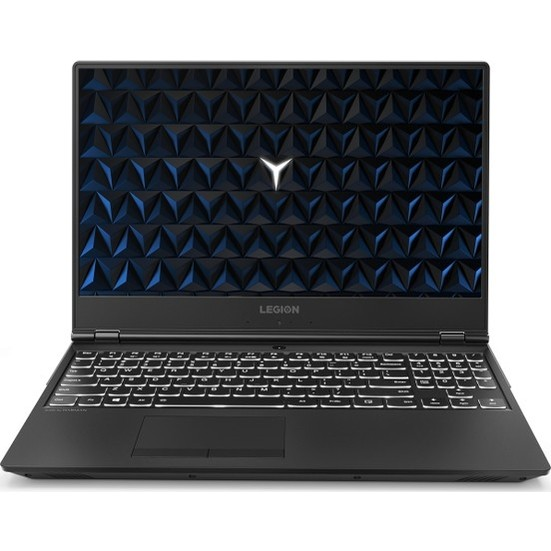

Lenovo Legion Y530-15ICH Intel Core i7 8750H 16GB 1TB + 256GB SSD GTX1050 Windows 10 Home 15.6" FHD Taşınabilir Bilgisayar 81FV00B9TX

ÜRÜN ÖZELLİKLERİ
Bellek Hızı 2666 MHz
Bluetooth Özelliği Var
Cihaz Ağırlığı 2 - 4 kg
Ekran Boyutu 15,6 inç
Ekran Kartı Bellek Tipi GDDR5
Ekran Kartı Hafızası 4 GB
Ekran Kartı Tipi Harici Ekran Kartı
Ekran Kartı Nvidia GeForce GTX1050
Ekran Özelliği Full HD
Ekran Panel Tipi IPS
eMMC Kapasitesi Yok
Harddisk Kapasitesi 1 TB
HDD Hızı 7200 RPM
HDMI Var
İşlemci Cache 9 MB Cache
İşlemci Hızı 2,20 GHz
İşlemci Nesli 8.Nesil
İşlemci Tipi Intel Core i7
İşlemci 8750H
İşletim Sistemi Windows 10 Home
Kart Okuyucu Var
Klavye Numerik Tuşlu, Q Türkçe
Kullanım Amacı Oyun ve Eğlence
Max Ekran Çözünürlüğü 1920 x 1200
Optik Sürücü Yok
Parmak İzi Okuyucu Yok
Pil 3 Hücreli
Ram (Sistem Belleği) 16 GB
Ram Tipi DDR4
Renk Siyah
SSD Kapasitesi 256 GB
Şarjlı Kullanım Süresi 4 - 6 Saat
Ürün Modeli Oyun Bilgisayarları
Webcam Var
Diğer
Garanti Süresi (Ay) 24
Yurt Dışı Satış Yok
Stok Kodu HBV00000FIII5